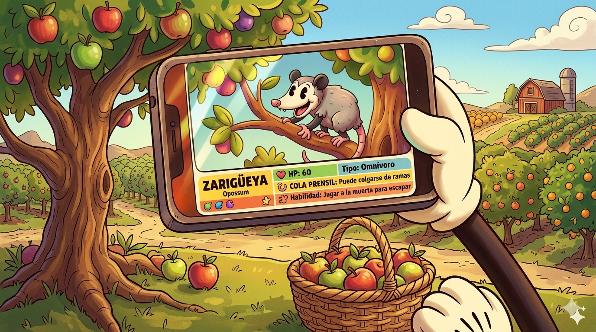

Jardines Funcionales

Los jardines funcionales son espacios verdes diseñados para cumplir una función específica dentro del ecosistema, además de embellecer el entorno. A diferencia de un jardín tradicional, estos buscan favorecer la biodiversidad, atraer polinizadores como abejas y mariposas, conservar especies de plantas nativas y contribuir al cuidado del medio ambiente. En esta sección descubrirás qué son los jardines funcionales, cuáles son sus beneficios y cómo pueden convertirse en pequeños refugios para la vida.
¿Qué son los jardines funcionales?
Un jardín funcional es un espacio donde las plantas se seleccionan y organizan para beneficiar tanto a la naturaleza como a las personas. Estos jardines incluyen especies nativas, plantas hospederas y plantas con flores que proporcionan alimento, refugio y lugares de reproducción para insectos, aves y otros animales. Además, ayudan a mejorar la calidad del aire, conservar el agua, reducir la temperatura del entorno y fortalecer el equilibrio de los ecosistemas, convirtiéndose en una herramienta importante para la educación ambiental y la conservación de la biodiversidad.